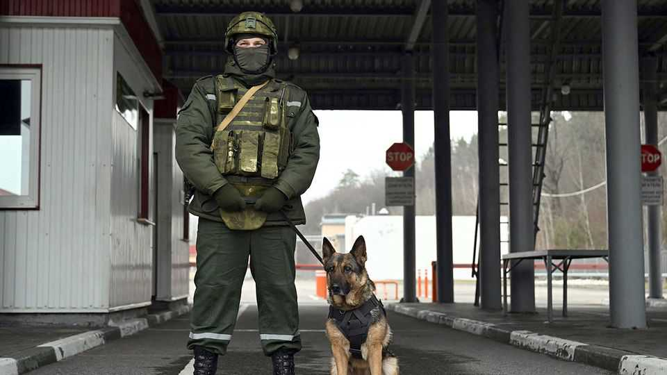
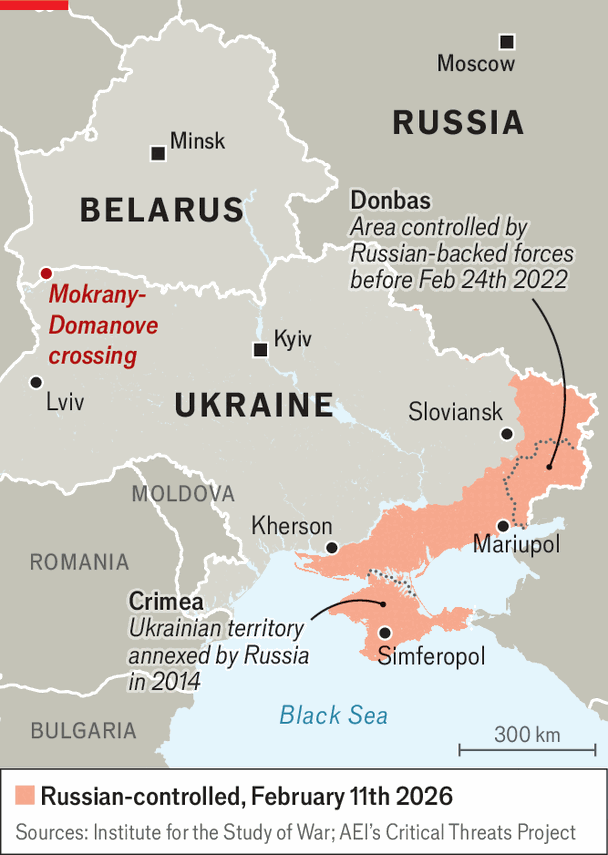

Europe | Tales from the far side

TWO SILHOUETTES appear on the snow-covered road between pine and birch forests that leads from Belarus to the Ukrainian border crossing. The first is a man in a wheelchair; behind him is a young woman. She pushes the chair a distance before returning to drag suitcases through the snow. She does this over and over again. Ukrainian guards offer assistance on the final 100 metres of the 2km trek, and record their details. Sofia, 17, is crossing to begin a new life in government-controlled Ukraine after spending four years under Russian occupation in the Kherson region. The man she is helping is Serhiy, a retired engineer in his 70s from Sloviansk. He had hoped to visit his daughter in Simferopol, in occupied Crimea, but was turned back by border guards and suffered a stroke in the process. His left side shaking, he debates returning to his home in front-line Donbas, though it has been hit by Russian drones and cut off from heating. “The walls are still mostly intact,” he says.

The Mokrany-Domanove crossing, 60km from Poland, has become a lifeline for some of Ukraine’s most desperate people. Officially it is closed, but in practice it has served as a humanitarian corridor for people escaping Russia’s occupation since the first weeks of the war. Reaching it is hard: the circuitous route runs through Russia and Belarus and takes days. To cross into Ukraine, those without valid Ukrainian documents (dangerous to carry in Russia) must first have temporary papers issued by the Ukrainian consulate in Minsk. Some never make it, stopped at “filtration points” run by the FSB, Russia’s state security service, or turned back after border interviews.
Roughly 30 to 40 people are crossing each day. Most are women, children or elderly, though military-age men also make it over, knowing they will be sent straight to Ukrainian army officers for possible recruitment. Some are terminally ill and returning home to die. Some bring things they could not abandon, including horses and in one case a small group of Kamori goats. All arrive with stories of a homeland being sealed off and Russified.
The reception team on the Ukrainian side of the border is marshalled by a local volunteer, also called Serhiy. Once the frozen travellers clear security checks, they move to Serhiy’s portacabin shelters, where they are given food, a new SIM card and a grant for refugees of 10,800 hryvnia ($250), provided the funds are available. They are then put on minibuses and taken to trains, buses, hospitals or relatives. Serhiy, an ex-convict who found God during the covid pandemic, says he draws on his own story to give the refugees hope, but raising their spirits is difficult. Those who crossed in the summer had been hoping things in the occupied territories would change for the better, but “those travelling now, in winter, see no changes. It is getting worse, worse, worse.”
Many of those crossing are afraid to speak. Those who do often begin in whispers, before caution gives way to confession. Alvetina, a pensioner in her 60s, travelled to Domanove from a village in Donetsk region. She hopes to see her family in Kyiv for the first time since the war began. The journey, which once took a few hours, lasted three days and cost $400.
The road took her through Mariupol for the first time since Russia annihilated much of the city early in the war. “You can still see the houses, how the poor people burned, how they were bombed. It’s hell, a truly terrible sight.” She cries as she describes her “invisible life” in her own village, hiding her Ukrainian passport in a jar of flour “like contraband”. She knows better than to reveal her loyalties to neighbours, many of whom now support Russian rule.
Four years into the war, the character of Russia’s occupation is changing. Last month marked the formal end of a three-year “transition period” intended to absorb the occupied territories into Russia. Moscow still appears uneasy about the loyalty of the most recently annexed regions. There, surveillance by the FSB is omnipresent.
Yet the imprint of annexation is visible. Courts, pensions, taxation, policing and business and property registers have been folded into Russia’s electronic bureaucracy. A new edict requires Ukrainian property owners to register their homes with the occupying authorities by July 1st or face seizure; those deemed “unoccupied” will be expropriated regardless. Propaganda banners promote the idea of “one nation”, reunited under Russia. “You must never speak well of Ukraine,” says Sofia. “Sit quiet, or risk being taken away or locked in your own basement.”
Russia’s occupation is cruel but effective. “No one has mastered the art of occupation like the Kremlin,” says a source in Ukrainian intelligence. In the early years of the war occupied Ukraine had a strong underground pro-Ukrainian network. Now there are fewer: “They filtered and frightened them.” Alongside Russia’s creeping battlefield advances, this has created new facts on the ground. In American-led peace talks, Ukraine’s leaders are being pushed to accept the de facto loss of millions of their citizens’ homes.
Recent polling suggests a growing minority, perhaps 40%, of Ukrainians might accept such a deal if it led to peace. But it finds limited support among those crossing out. “We know it is difficult,” says Alvetina. “But we are still waiting for Ukraine. We still hope to be liberated.”■
To stay on top of the biggest European stories, sign up to Café Europa, our weekly subscriber-only newsletter.